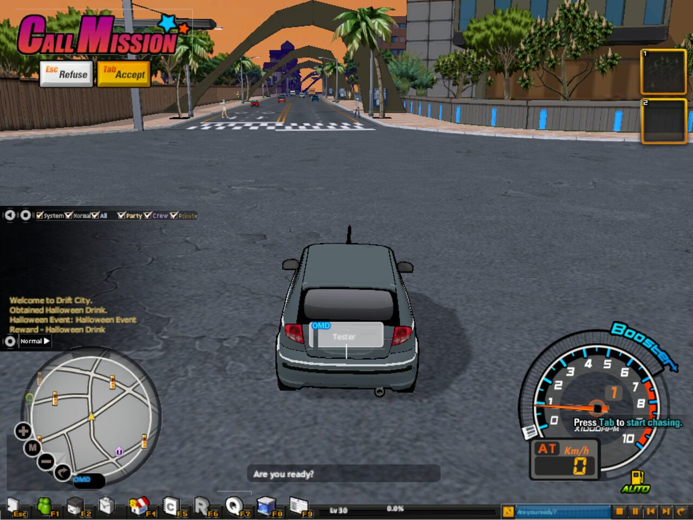
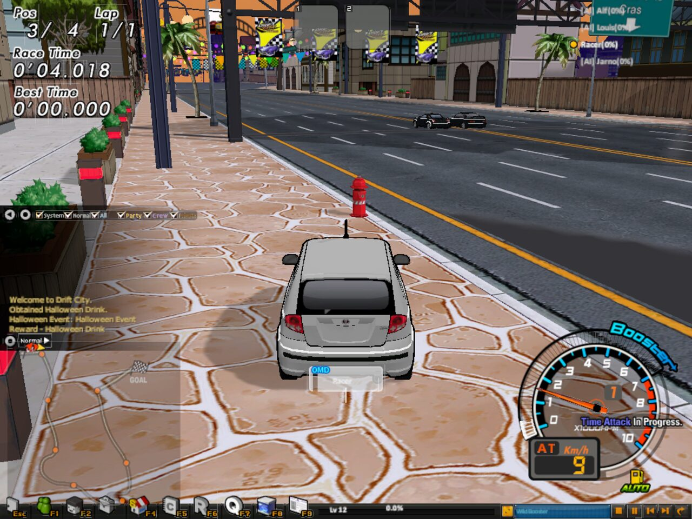
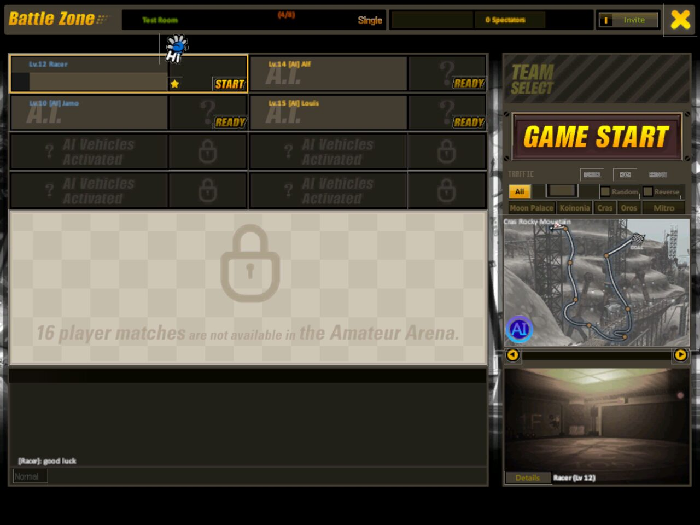
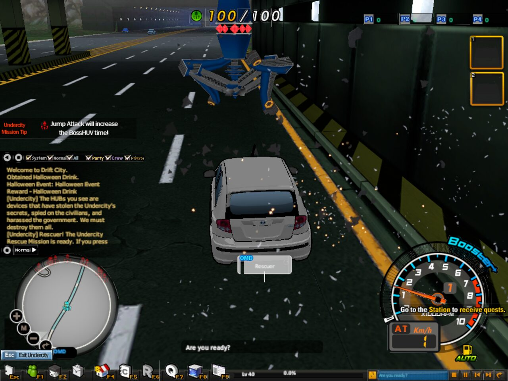
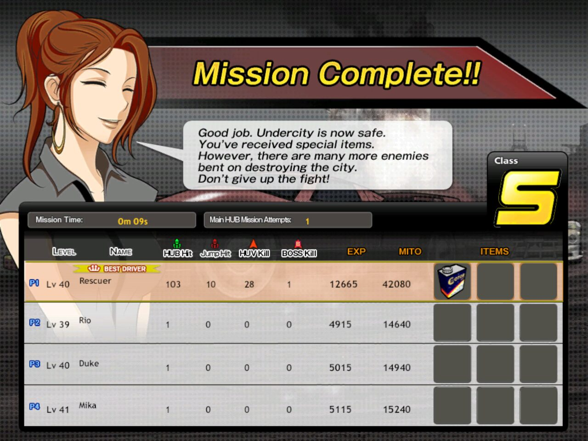
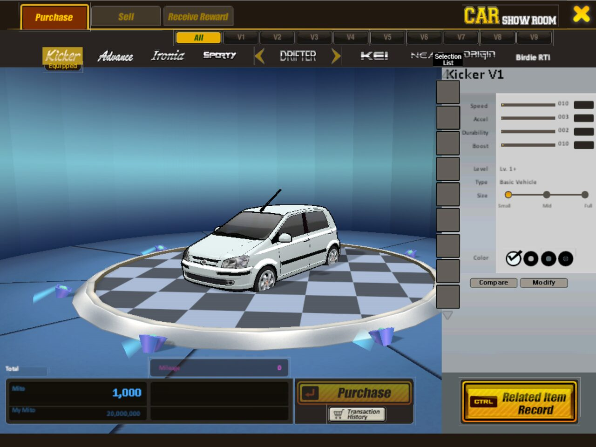
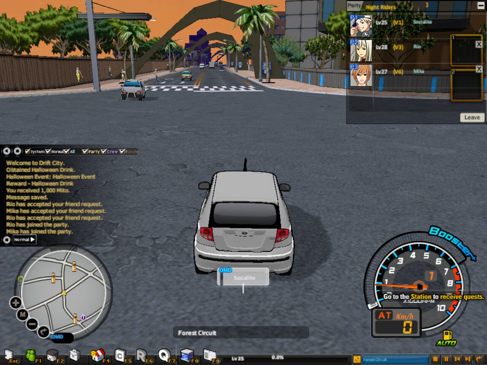
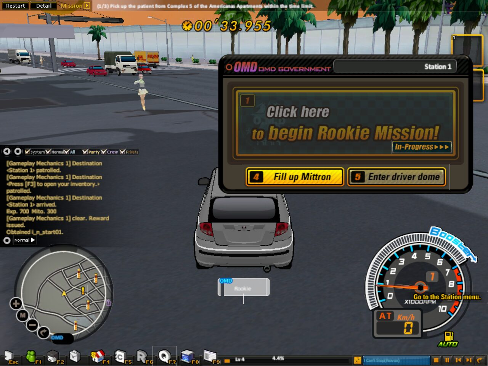
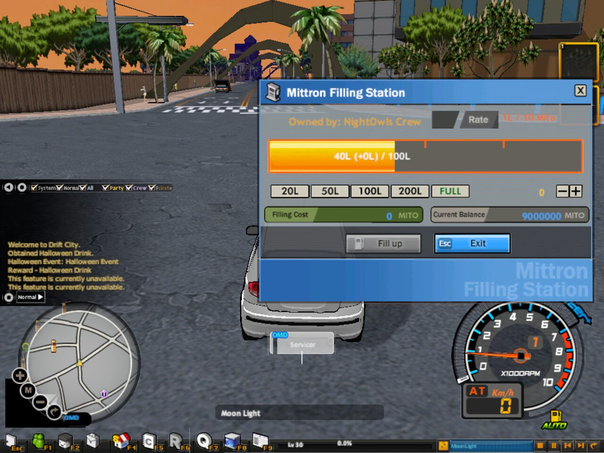

A from-scratch rebuild of the online racing game Drift City, written by reverse-engineering the original
DriftCity.exe function by function, with its own game server. It runs on your own installed copy of the
client: the cities, the cars, the screens, the sounds and every game table are read from your game folder while it
plays.

Coverage is measured against the original executable: all 18,647 functions of DriftCity.exe
were sorted into subsystems, and each subsystem is compared with what the Unity client and the server do.
Share converted, largest subsystems first (size of the original code in brackets). Libraries and platform code the rebuild replaces on purpose (C runtime, ODE physics, the original network protocol, anti-cheat and login services) are left out.
What is left is mostly what can't be rebuilt one to one: the original company's services (the cash shop, PC-room bonuses, portal friend invites), GM-only and debug replies, and rules the original server held, for which the rebuild documents its own. See the code map.
The rebuild running on the original data. Everything you see is drawn from the game's own files.








Offline on your own, or online on a server you host. A selection; the client README lists everything.
Moon Palace, Koinonia, Cras and Oros from the game's own terrain, blocks and props, with traffic on the original lanes, pedestrians, trains, the weather clock, the sky domes and baked ground shadows.
The client's car model recovered from the exe: drifting, the booster and its Mittron fuel, jumps, skill items, durability, and every car of the vehicle list with its grades and parts.
The HUVs drive the client's routes; bosses run their recorded paths with their escorts. Party chases share one HUV, and Rush Time and the Virtual HUV run with real players.
Lobby, 16-slot wait rooms, team and wager rooms, Real Match, lap-time battles, the GT Championship, the ladder, spectating, ghost battles, replays and crew Channel Battles.
The underground party mode with its HUB phase, the Main HUB behind its shield, the HUV waves and the boss, solo with AI partners or with a real party online.
The main quests, the step quests of the stations, deliveries, patrols, instant missions, the Team ROO / OMD storyline split and its ending, and the apprentice tutorial for new drivers.
The car show room, the custom shop with period prices, parts shop, manufacturing, licences, the inventory with set parts and quick slots, trade and the Auction House.
Parties, friends, notes, crews, private chat channels, the chat modes and the word filter, driver info cards and recommendations.
Gacha, lotto, coupons, the token book, lucky bags and the seasonal city events (Christmas trees, the harvest, Halloween), switched by date or for testing.
The client mounts the game's NayaPack archives (.agt and the
patches) and parses its formats directly: Gamebryo NIF 20 models and animations, DDS textures, the city block and
terrain files, the road and traffic networks, the XLT/TDF tables and the game.nui interface layouts.
Every system was studied in the exe with Ghidra, function by function.
The notes in DriftCity_RE give the addresses, mark what is exact and what is inferred, and document the
rebuild's own rule wherever the original server decided.
All of the client's dialogs are drawn from game.nui with their
original images, state rules and hotkeys, so the screens are the game's own rather than look-alikes.
The original server is gone, so the rebuild has its own (Node.js, JSON over WebSocket, SQLite). It is authoritative for money, rewards and items and runs the online modes.
You need the installed Drift City client: the folder that contains DriftCity.exe and
Data (with Init.agt, World.agt ...). The rebuild finds it in this order:
-gameRoot "C:\Games\Drift City" on the command lineDRIFTCITY_ROOT environment variablegameroot.txt next to the player exe (or next to Assets in the editor) holding that pathIt only reads the folder; it never writes to it.
DriftCityRebuild-Client-win64.zip from the
latest release and unzip it anywhere.gameroot.txt next to DriftCityOffline.exe with your game path.DriftCityOffline.exe.DriftCityOffline in Unity.DriftCityOffline/gameroot.txt with your game path.Assets/Scenes/DriftCityGame.unity and press Play, or build with
Drift City > Build Windows Player (no game data). Put a gameroot.txt next to the built
DriftCityOffline.exe too.git clone https://github.com/MagicIbrar/driftcity-unity.git echo C:\Games\Drift City> driftcity-unity\DriftCityOffline\gameroot.txt
Only needed to play online. The client plays offline without it.
DriftCityRebuild-Server.zip from the latest release (or use the DriftCityServer folder of the source).npm install first), put your game path in gameroot.txt
(or set DRIFTCITY_ROOT).npm start (or start-server.bat). On the first start it reads the tables it
needs from your game's archives into a local gamedata folder, then listens on TCP port 7860.Name|ws://HOST:7860 to servers.txt
next to the client.Admins can type players, say, announce, kick, mute, ban and more in the server
window; node tools/bot.js 3 starts test drivers.
Drift City is an online racing game built on the Gamebryo engine and run through the Hangame portal: players drive freely through open cities, take missions from the stations, chase HUVs, race each other in the Battle Zone, form crews to fight over channels, and team up underground in the Undercity. Its official servers have been closed for years. This rebuild keeps the game playable from the client files its players still have, and documents how it worked.
Thank you for your help with this project and the GitHub repository.
Thank you for your help with this project.
And thank you to everyone who kept their Drift City client and helped test the rebuild.
A non-commercial fan project for preservation and study, not affiliated with or endorsed by the game's developer, publisher or the Hangame portal. Drift City and all related names are trademarks of their owners. The code is MIT licensed; the game and all of its content remain the property of their owners and are not distributed here. Please do not open issues or pull requests that contain game files or content extracted from them.